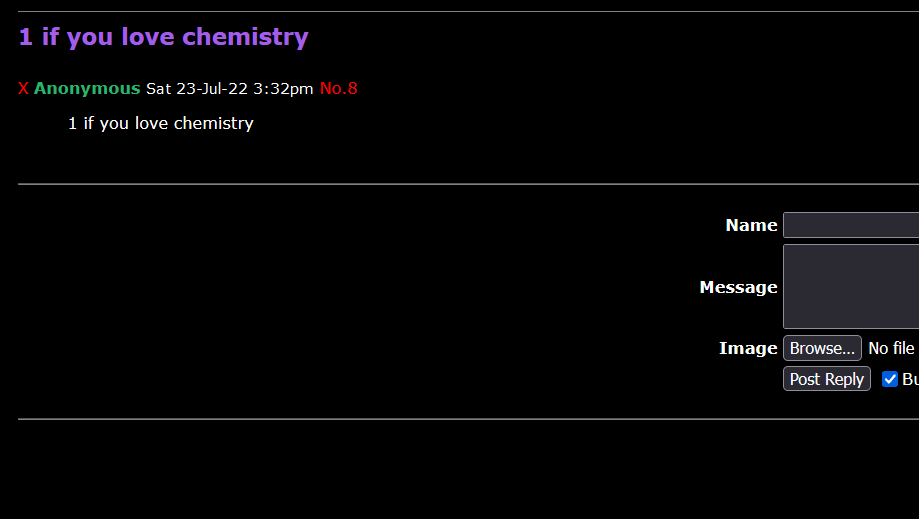

somchan is a messageboard based on "tinyib-mappy".
It stands for "server oriented messageboard".
(I definitely did not just make that up)
According to Wikipedia "An imageboard is a type of Internet forum that
revolves around the posting of images, often alongside text and discussion.
The first imageboards were created in Japan as an
extension of the textboard concept."
In some ways it is the complete opposite of social media with no
account registeration or logins, just pure anonymous discussions.
Basically anti-social-social-media-before-social-media-was-a-thing...?
If that sounds like a mouthful, you could always just call it an imageboard.
Anonymous posting.
(Which could be a double-edged sword, I know)
It means you can speak your mind without any repercussions.
Well.. except all the angry replies.
I will be moderating to a certain extent on my own.
Being the admin I can see every poster's IP address,
If you are not comfortable with that you can use a vpn.
This also seems like the perfect time to affirm that
I ""DO NOT"" hold responsibility for any content posted to the board.
There isn't much of a "project" here if it wasn't obvious.
The whole thing is based on tinyib-mappy
with minor functional changes and a lot of cosmetical changes.
You're better off taking a look at tinyib-mappy if interested.
